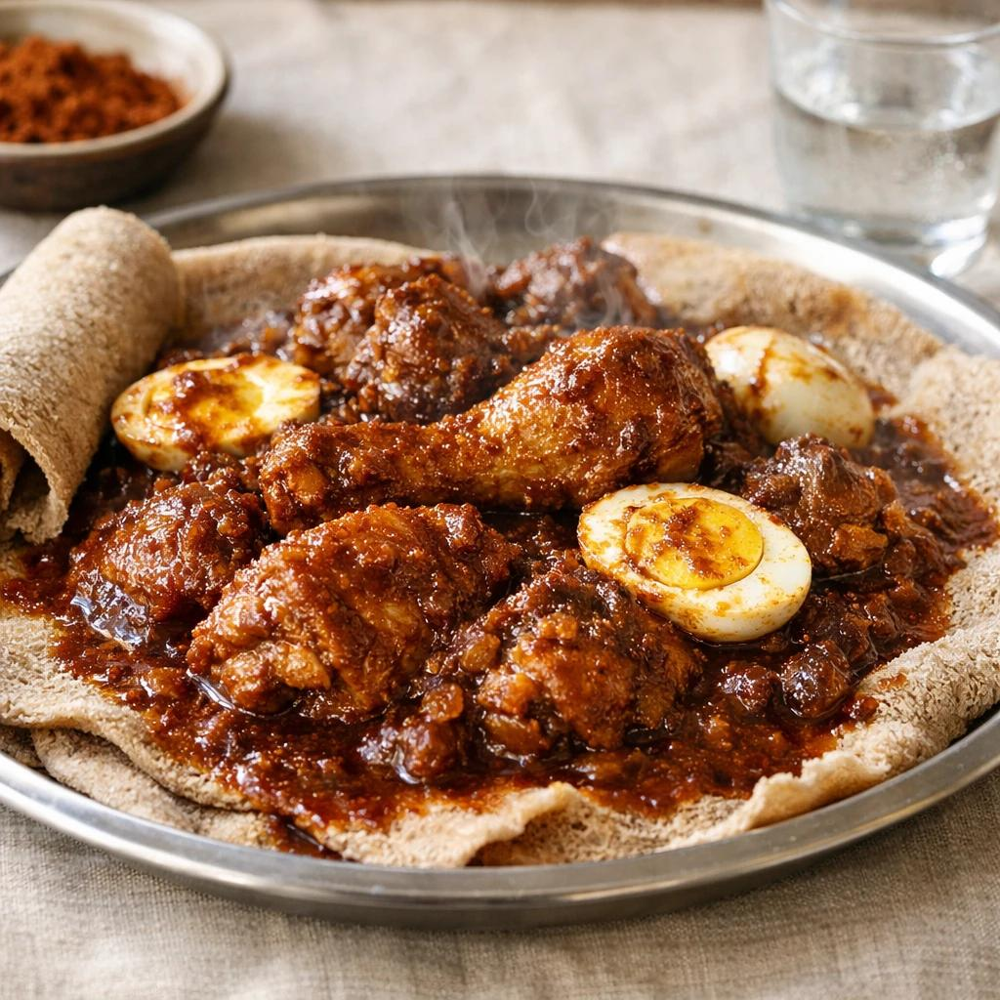

Injera with Doro Wat

Description:
Doro Wat is one of Ethiopia's most famous dishes. It is a rich, spicy chicken stew served with Injera, a soft sourdough flatbread made from teff flour.
Ingredients:
- 1 whole chicken, cut into pieces
- 2 large onions, finely chopped
- 3 tablespoons berbere spice
- 3 cloves garlic, minced
- 2 cups water
- 4 boiled eggs
- 1 tablespoon ginger, minced
- 2 tablespoons niter kibbeh
- Salt to taste
Steps:
- Cook the chopped onions in a large pot until softened.
- Add niter kibbeh, garlic, and ginger.
- Stir in the berbere spice and cook for a few minutes.
- Add chicken pieces and mix well.
- Pour in water and simmer for 40–45 minutes.
- Add the boiled eggs and cook for another 10 minutes.
- Season with salt.
- Serve hot on top of Injera.